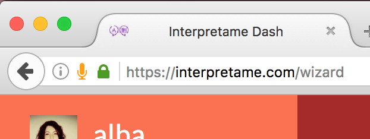

Si es la primera vez que accedes a interpretame.com
Chrome
1. Dale click 'Permitir/Allow' cuando la ventana sea visible.
2. Sabrás que funciona al ver una pequeña videocámara al final de la barra de direcciones.
Firefox
1. Dale click 'Compartir dispositivo/Share salected device' cuando la ventana sea visible.
2. Sabrás que funciona al ver un pequeño micrófono al principio de la barra de direcciones.

Si anteriormente denegaste acceso a tu micrófono en Chrome, puedes habilitarlo nuevamente en los ajustes de Google Chrome. Sigue estos pasos para habilitar el acceso de Discord a tu micrófono en el navegador de Chrome:
1. Dale click al menú de Chrome en la barra del navegador.
2. Selecciona los ajustes o configuración.
3. Dale click en mostrar ajustes o configuración avanzada.
4. En la sección de 'Privacidad', dale click a la configuración de contenido.
5. En la sección de 'Multimedia', dale click en 'Administrar Excepciones'
6. Selecciona Discord en las sección de Administrar Excepciones y dale click en el símbolo 'X'. Después dale click al botón 'Listo'.
7. En la apicación de Discord para tu navegador, habilita tu micrófono.
8. Dale click 'Permitir' cuando la ventana sea visible.